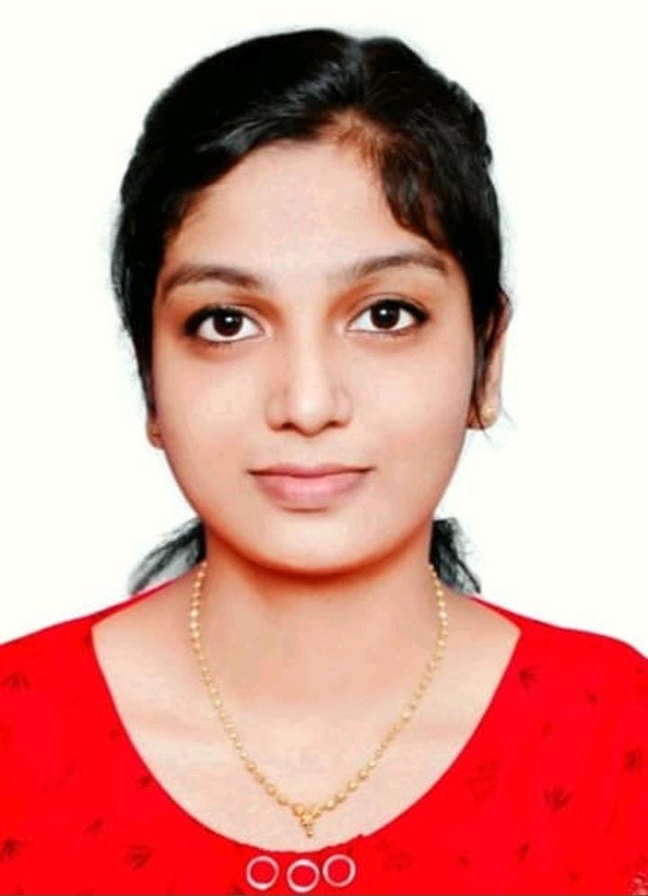
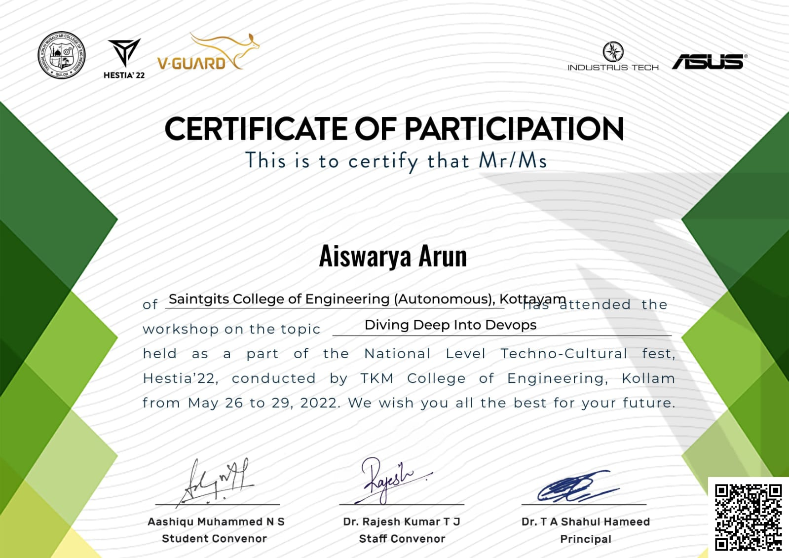

AISWARYA ARUN
Computer Science Engineering Student

PROFILE
I'm a passionate Computer Science Engineering student with a keen interest in web development. I aspire to become a skilled full-stack web developer, utilizing my knowledge to craft innovative web applications that enhance user experiences. Through personal projects and academic excellence, I am committed to refining my skills and contributing positively to the digital world.
EDUCATION
10th :
St.Alphonsa Public School
Aruvithura
2019
Percentage Obtained :97%
12th :
St.Mary's Higher Secondary School
Bharananganam
2021
Percentage Obtained :99.6%
BTech : Computer Science and Engineering
Saintgits College of Engineering (Autonomous)
Kottayam
2021-2025
SKILLS
- Ability to work in a Team - ✪✪✪✪
- Problem Solving - ✪✪✪✪
- C - ✪✪✪✪
- Java - ✪✪✪
- Data Structures and Algorithms - ✪✪✪✪
- Communication Skills - ✪✪✪✪
- Creative Thinking - ✪✪✪✪✪
LANGUAGES
- English
- Malayalam
- Hindi
- Syriac
WORKSHOPS
-
National Institute of Technology
Calicut
Diving Deep into DevOps

TKM College of Engineering
Kollam
AWARD
Best Critic Award
EVENT :What an idea sir jii
TKM College of Engineering
Kollam
HOBBIES
COURSES